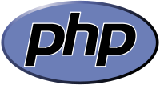
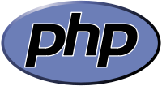

Part of something bigger:
Note
Who has used anything open source, software? Who has contributed something?

Make a real difference with open source
David Beitey @davidjb
Note
Who has used anything open source, software? Who has contributed something?
Make a real difference with open source
David Beitey @davidjb
Note
Or maybe:
Note
You're about to learn why I try to only work with O/S: because it's awesome.
Note
Roughly translates to what people think.
Note
A development process involving openly sharing blueprints and ideas.
Content is freely licenced (free, as in speech)
In terms of software:
iOS/iTunes: just because it's $0 doesn't make it open source.
Developers: make source code freely available for reuse & review
restriction)
Community: bonds together to fix issues and add features
Note
But why are they doing this?
Me (this presentation, my OS etc)
You
Everyone!
Yes, even Windows users.


 

~82% of websites use an open source server or programming language. (Source)
2014: 50% of all enterprises expected to contribute & adopt open source (2)
Tux © lewing@isc.tamu.edu, Android CC-BY Android
Note
Why? A 2014 survey from BlackDuck (OpenHub) of 1200 professionals: * Cost (maintenance) * Higher quality * Freedom of changing code * Better features, higher * Security * Access to skill bases.
It shows, since closed source is using open source...
What do you call a Linux volunteer who just contributed his or her 6th patch to the Linux kernel? Hired.
Note
What do you call a Linux volunteer who just contributed his or her 6th patch to the Linux kernel? Hired. -- InformationWeek, 2014
The in-joke is that after 5, you'll already have a job offer.
It shows O/S in use, and in demand, from a corporate perspective.
Note
Involvement in Open source benefits everyone, especially someone personally.
Jobs & employment. Employers want to see what you've done. Your contributions form your automatic CV.
Knowledge and skills. Learn by doing on real-world projects.
Improve your knowledge: tools, methods, collaboration, Negotiation, best practice
Minimise effort. Save time, effort, money by not reinventing the wheel.
Do things you couldn't do before without the skill!
Connect with the world. Be part of a team from all across the world.
I work alone, but with so many people. I'm part of someone else's massive team without knowing it; interesting feeling
Make a difference. Your contributions will help you and others.
Open source community is passionate. It's more than just a job so tend to care more.
Note
Note

Note
Get started, it's easy.
For IT professionals, contribute in any way. Build your profile.
For industry, recognise the benefits.
Go forth and make a difference!
Python interest group (PyNQ)
If you work with or are interested in Python, come see me or get in touch at http://pynq.org.
Follow me:
{kind=link}